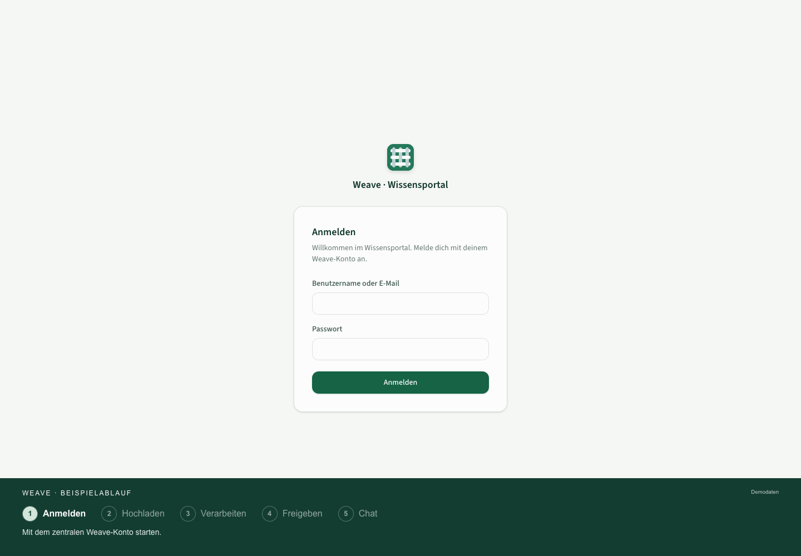

Weave, from document to knowledge.
Fresh browser renders of the current UI with neutral example data. Every screenshot is a native PNG, 2880 pixels wide, captured in Chrome at 2× pixel density. Click any image to open the original.
Example workflow
Sign in → upload → process → approve → chat. The animation illustrates the workflow using simulated states; the chat answer is a mockup, not a live model response.
Download GIF · Download MP4 · Image index and capture notes
Show animated GIF

User interface screenshots